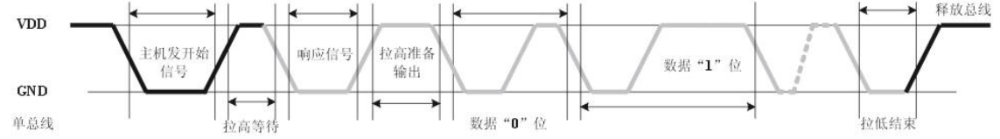
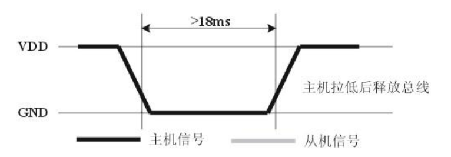
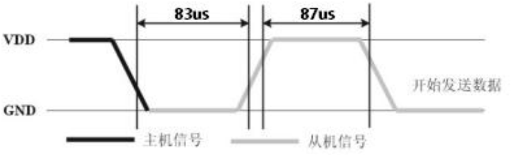

第六章 ADC
6.1 Hi3861的ADC外设¶
Hi3861V100 芯片的ADC具有以下功能特性 。
- 输入时钟频率：3MHZ 。
- 采样精度：12bit。
- 单通道采样频率：小于200kHz。
- 买样顺序：从通道0到通道7，每个通道采样一个数据,循环采样。
- 支持采样数据平均滤波处理：平均次数1、2、4、8。在多通道场景下,每个通道接收N个数据(平均滤波个数)再切换通道。
- 数转换电压基准：支持自动识别模式、1.8V 基准模式、3.3V 基准模式。
6.2 ADC读取模拟值¶
源代码
C
#include <stdio.h>
#include "ohos_init.h"
#include "cmsis_os2.h"
#include "iot_gpio.h"
#include "hi_io.h"
#include "hi_adc.h"
/**
* adc_demo/adc_demo.c
* ADC读取模拟值案例
* HAL接口缺失ADC的API，故本节API均采用海思SDK接口。
* 利用ADC通道读取红外传感器的模拟值，信号引脚接传感器的AO(Analog)。
* 同时一些宏和函数参数，我们尽量使用API定义好的枚举或结构体，因此要学会阅读源码注释。
*/
#define SensorAdcChannel HI_ADC_CHANNEL_4
static void SensorAdcTask(void* params)
{
/* 定义ADC读取的模拟值的存储地址 */
uint16_t value;
while(1)
{
if (hi_adc_read(SensorAdcChannel, &value, HI_ADC_EQU_MODEL_4, HI_ADC_CUR_BAIS_DEFAULT, 0) == HI_ERR_SUCCESS) {
printf("[INFO]ADC_VALUE = %d\r\n", value);
}
osDelay(100);
}
}
static void AdcEntry(void)
{
osThreadAttr_t attr = {
.name = "AdcThread",
.stack_size = 1024,
.priority = osPriorityNormal
};
if (osThreadNew(SensorAdcTask, NULL, &attr) == NULL) {
printf("[ERROR] Thread Create Faild.\r\n");
}
}
SYS_RUN(AdcEntry);
模块编译脚本
Text Only
static_library ("adc_demo") {
sources = [
"adc_demo.c"
]
include_dirs = [
# include "ohos_init.h"
"//utils/native/lite/include",
# include CMSIS-RTOS API V2 for OpenHarmony1.0+
"//kernel/liteos_m/kal/cmsis",
# include IoT硬件设备操作接口 for OpenHarmony1.0+：
"//base/iot_hardware/peripheral/interfaces/kits",
]
}
APP编译脚本
Text Only
import("//build/lite/config/component/lite_component.gni")
lite_component("app") {
features = [
"gn_practice/application:gn_app",
"gn_practice/driver:gn_driver",
"gn_practice/library:gn_library",
"kv_store_demo:kv_store_demo",
"file_demo:file_demo",
"thread_demo:thread_demo",
"timer_demo:timer_demo",
"mutex_demo:mutex_demo",
# GPIO模块
"gpio_demo:gpio_demo",
# ADC模块
"adc_demo:adc_demo",
]
}
6.3 DHT11温湿度¶
6.3.1 DHT11单总线通信¶
DHT11器件采用简化的单总线通信。单总线即只有一根数据线，系统中的数据交换、控制均由单总线完成。微处理器与DHT11之间的通讯和同步,采用单总线数据格式，一次传送40位数据， 高位先出 。
数据格式：
8bit湿度整数数据+8bit湿度小数数据+8bit温度整数数据+8bit温度小数数据+8bit校验位。其中湿度小数部分为0，8bit校验位等于所得结果的末8位。
特殊说明：当温度低于0℃时温度数据的低8位的最高位置为1。
示例：-10.1 ℃表示为 0000 1010 1000 0001
0000 1010(整数) = 10℃ ，00000001(小数) = 0.1℃ ，低8位的最高位置为 1 所以温度数据为 -10.1℃
通信时序：
用户主机（MCU）发送一次开始信号后，DHT11从低功耗模式转换到高速模式，待主机开始信号结束后，DHT11发送响应信号，送出40bit的数据，并触发一次信息采集。

6.3.2 单总线通信代码¶
芯片手册 中读取DHT11温湿度流程：
- DHT11上电后（DHT11上电后要等待1S以越过不稳定状态在此期间不能发送任何指令），测试环境温湿度数据，并记录数据，同时DHT11的DATA数据线由 上拉电阻 拉高一直保持高电平；此时DHT11的DATA引脚处于 输入状态 ，时刻检测外部信号。
- 微处理器的I/O设置为 输出 同时输出低电平，且低电平保持时间不能小于18ms（最大不得超过30ms），然后微处理器的I/O设置为 输入状态 ，由于上拉电阻，微处理器的I/O即DHT11的DATA数据线也随之变高，等待DHT11作出回答信号。

- DHT11的DATA引脚检测到外部信号有低电平时，等待外部信号低电平结束，延迟后DHT11的DATA引脚处于输出状态，输出83微秒的低电平作为应答信号，紧接着输出87微秒的高电平通知外设准备接收数据，微处理器的I/O此时处于输入状态，检测到I/O有低电平（DHT11回应信号）后，等待87微秒的高电平后的数据接收 。

- 由DHT11的DATA引脚输出40位数据，微处理器根据I/O电平的变化接收40位数据，位数据“0”的格式为：54微秒的低电平和23-27微秒的高电平，位数据“1”的格式为：54微秒的低电平加68-74微秒的高电平。
- 结束信号：DHT11的DATA引脚输出40位数据后，继续输出低电平54微秒后转为输入状态，由于上拉电阻随之变为高电平。但DHT11内部重测环境温湿度数据，并记录数据，等待外部信号的到来。
6.3.3 驱动程序¶
待更新。。。